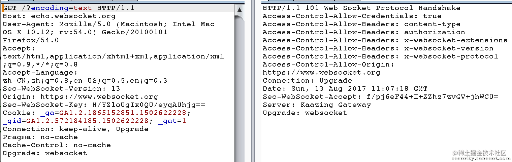
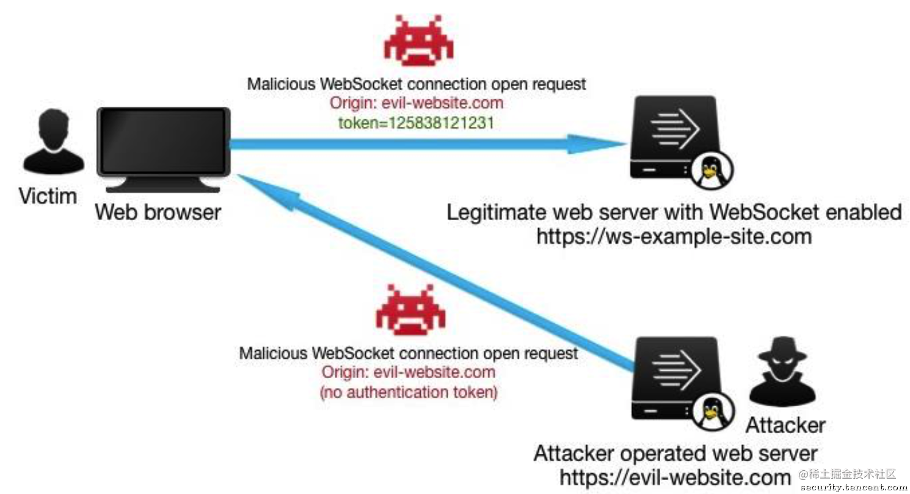
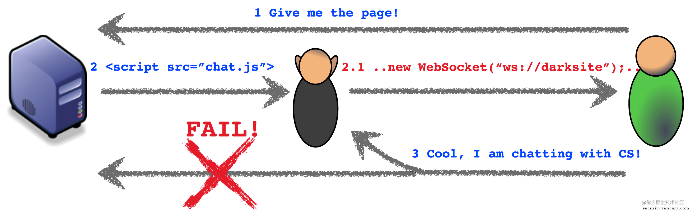

webSocket 有哪些安全问题，应该如何应对？
参考答案
### 1. WebSocket特性介绍
WebSocket是HTML5开始提供的一种浏览器与服务器间进行全双工通讯的网络技术。WebSocket通信协议于2011年被IETF定为标准RFC 6455，WebSocket API也被W3C定为标准，主流的浏览器都已经支持WebSocket通信。
WebSocket协议是基于TCP协议上的独立的通信协议，在建立WebSocket通信连接前，需要使用HTTP协议进行握手，从HTTP连接升级为WebSocket连接。浏览器和服务器只需要完成一次握手，两者之间就直接可以创建持久性的连接，并进行双向数据传输。
WebSocket定义了两种URI格式, “ws://“和“wss://”，类似于HTTP和HTTPS, “ws://“使用明文传输，默认端口为80，”wss://“使用TLS加密传输，默认端口为443。
ws-URI : "ws://host[:port]path[?query]" wss-URI : "wss://host[:port]path[?query]"复制代码WebSocket 握手阶段，需要用到一些HTTP头，升级HTTP连接为WebSocket连接如下表所示。
| HTTP头 | 是否必须 | 解释 |
|---|---|---|
| Host | 是 | 服务端主机名 |
| Upgrade | 是 | 固定值，”websocket” |
| Connection | 是 | 固定值，”Upgrade” |
| Sec-WebSocket-Key | 是 | 客户端临时生成的16字节随机值, base64编码 |
| Sec-WebSocket-Version | 是 | WebSocket协议版本 |
| Origin | 否 | 可选, 发起连接请求的源 |
| Sec-WebSocket-Accept | 是(服务端) | 服务端识别连接生成的随机值 |
| Sec-WebSocket-Protocol | 否 | 可选，客户端支持的协议 |
| Sec-WebSocket-Extensions | 否 | 可选， 扩展字段 |
一次完整的握手连接如下图:

一旦服务器端返回 101 响应，即可完成 WebSocket 协议切换。服务器端可以基于相同端口，将通信协议从 http://或 https:// 切换到 ws://或 wss://。协议切换完成后，浏览器和服务器端可以使用 WebSocket API 互相发送和收取文本和二进制消息。
2. WebSocket应用安全问题
WebSocket作为一种通信协议引入到Web应用中，并不会解决Web应用中存在的安全问题，因此WebSocket应用的安全实现是由开发者或服务端负责。这就要求开发者了解WebSocket应用潜在的安全风险，以及如何做到安全开发规避这些安全问题。
2.1 认证
WebSocket 协议没有规定服务器在握手阶段应该如何认证客户端身份。服务器可以采用任何 HTTP 服务器的客户端身份认证机制，如 cookie认证，HTTP 基础认证，TLS 身份认证等。在WebSocket应用认证实现上面临的安全问题和传统的Web应用认证是相同的，如：CVE-2015-0201, Spring框架的Java SockJS客户端生成可预测的会话ID，攻击者可利用该漏洞向其他会话发送消息; CVE-2015-1482, Ansible Tower未对用户身份进行认证，远程攻击者通过websocket连接获取敏感信息。
2.2 授权
同认证一样，WebSocket协议没有指定任何授权方式，应用程序中用户资源访问等的授权策略由服务端或开发者实现。WebSocket应用也会存在和传统Web应用相同的安全风险，如：垂直权限提升和水平权限提升。
2.3 跨域请求
WebSocket使用基于源的安全模型，在发起WebSocket握手请求时，浏览器会在请求中添加一个名为Origin的HTTP头，Oringin字段表示发起请求的源，以此来防止未经授权的跨站点访问请求。WebSocket 的客户端不仅仅局限于浏览器，因此 WebSocket 规范没有强制规定握手阶段的 Origin 头是必需的，并且WebSocket不受浏览器同源策略的限制。如果服务端没有针对Origin头部进行验证可能会导致跨站点WebSocket劫持攻击。该漏洞最早在 2013 年被Christian Schneider 发现并公开，Christian 将之命名为跨站点 WebSocket 劫持 (Cross Site WebSocket Hijacking)(CSWSH)。跨站点 WebSocket 劫持危害大，但容易被开发人员忽视。

上图展示了跨站WebSocket劫持的过程，某个用户已经登录了WebSocket应用程序，如果他被诱骗访问了某个恶意网页，而恶意网页中植入了一段js代码，自动发起 WebSocket 握手请求跟目标应用建立 WebSocket 连接。注意到，Origin 和 Sec-WebSocket-Key 都是由浏览器自动生成的，浏览器再次发起请求访问目标服务器会自动带上Cookie 等身份认证参数。如果服务器端没有检查 Origin头，则该请求会成功握手切换到 WebSocket 协议，恶意网页就可以成功绕过身份认证连接到 WebSocket 服务器，进而窃取到服务器端发来的信息，或者发送伪造信息到服务器端篡改服务器端数据。与传统跨站请求伪造(CSRF)攻击相比，CSRF 主要是通过恶意网页悄悄发起数据修改请求，而跨站 WebSocket 伪造攻击不仅可以修改服务器数据，还可以控制整个双向通信通道。也正是因为这个原因，Christian 将这个漏洞命名为劫持(Hijacking)，而不是请求伪造(Request Forgery)。
理解了跨站WebSocket劫持攻击的原理和过程，那么如何防范这种攻击呢？处理也比较简单，在服务器端的代码中增加 对Origin头的检查，如果客户端发来的 Origin 信息来自不同域，服务器端可以拒绝该请求。但是仅仅检查 Origin 仍然是不够安全的，恶意网页可以伪造Origin头信息，绕过服务端对Origin头的检查，更完善的解决方案可以借鉴CSRF的解决方案-令牌机制。
2.4 拒绝服务
WebSocket设计为面向连接的协议，可被利用引起客户端和服务器端拒绝服务攻击。
(1). 客户端拒绝服务
WebSocket连接限制不同于HTTP连接限制，和HTTP相比，WebSocket有一个更高的连接限制，不同的浏览器有自己特定的最大连接数,如：火狐浏览器默认最大连接数为200。通过发送恶意内容，用尽允许的所有Websocket连接耗尽浏览器资源，引起拒绝服务。
(2). 服务器端拒绝服务
WebSocket建立的是持久连接，只有客户端或服务端其中一发提出关闭连接的请求，WebSocket连接才关闭，因此攻击者可以向服务器发起大量的申请建立WebSocket连接的请求，建立持久连接，耗尽服务器资源，引发拒绝服务。针对这种攻，可以通过设置单IP可建立连接的最大连接数的方式防范。攻击者还可以通过发送一个单一的庞大的数据帧(如, 2^16)，或者发送一个长流的分片消息的小帧，来耗尽服务器的内存，引发拒绝服务攻击, 针对这种攻击，通过限制帧大小和多个帧重组后的总消息大小的方式防范。
2.5 中间人攻击
WebSocket使用HTTP或HTTPS协议进行握手请求，在使用HTTP协议的情况下，若存在中间人可以嗅探HTTP流量，那么中间人可以获取并篡改WebSocket握手请求，通过伪造客户端信息与服务器建立WebSocket连接，如下图所示。防范这种攻击，需要在加密信道上建立WebSocket连接，使用HTTPS协议发起握手请求。

2.6 输入校验
WebSocket应用和传统Web应用一样，都需要对输入进行校验，来防范来客户端的XSS攻击，服务端的SQL注入，代码注入等攻击。
3. 总结
Websocket是一个基于TCP的HTML5的新协议，可以实现浏览器和服务器之间的全双工通讯。在即时通讯等应用中，WebSocket具有很大的性能优势, 并且非常适合全双工通信，但是，和任何其他技术一样，开发WebSocket应用也需要考虑潜在的安全风险。
答题思路：
WebSocket可能遇到的安全问题
- 跨站脚本攻击（XSS）：
攻击者可能通过WebSocket连接向用户发送恶意脚本，如果服务器没有适当过滤和验证用户输入，这些脚本可能会被浏览器执行。
- 跨站请求伪造（CSRF）：
WebSocket连接可能被用于执行未经授权的操作，尤其是当身份验证和授权机制存在缺陷时。
- 中间人攻击（MitM）：
攻击者可能截获和篡改WebSocket连接，窃取用户敏感信息或操纵通信内容。
- 拒绝服务（DoS）攻击：
恶意用户可能通过大量的并发WebSocket连接或发送大量的消息来耗尽服务器资源。
- 未加密的通信：
如果WebSocket连接未通过TLS/SSL加密，则传输的数据可能被截获和读取。
- 身份验证和授权问题：
WebSocket协议本身不处理授权或身份验证，需要应用程序层来确保只有经过授权的用户才能建立连接。
应对策略
- 使用TLS/SSL加密：
使用wss://协议代替ws://协议，确保WebSocket通信过程中的数据加密，防止中间人攻击。
- 输入验证和过滤：
对从用户输入中获取的数据进行严格的验证和过滤，确保输入数据的安全性，防止XSS攻击。
- 身份验证和授权：
在WebSocket连接建立时，进行适当的身份验证和授权，确保只有经过授权的用户可以建立连接和发送消息。
- CSRF防御：
使用CSRF令牌等机制来验证WebSocket请求的来源，确保请求来自合法用户。
- 资源限制：
实施适当的资源限制和控制，例如限制每个用户的并发连接数或消息发送频率，以防止资源耗尽攻击。